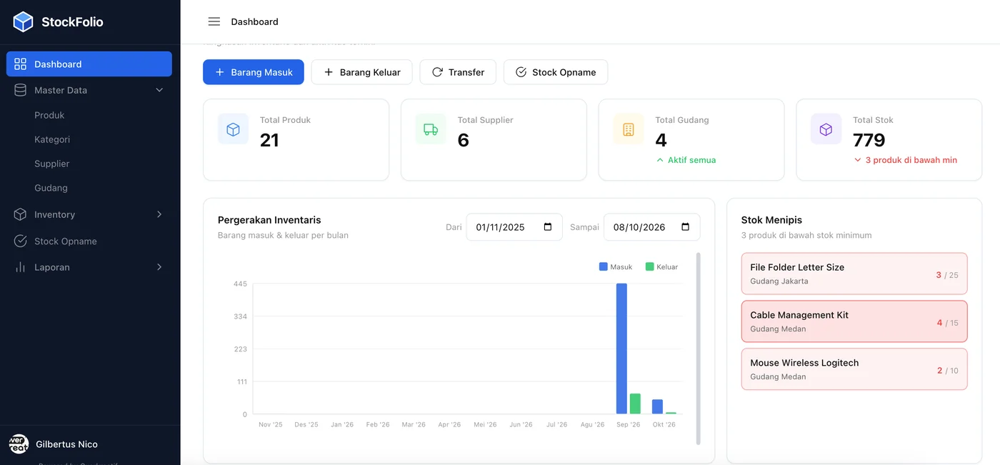
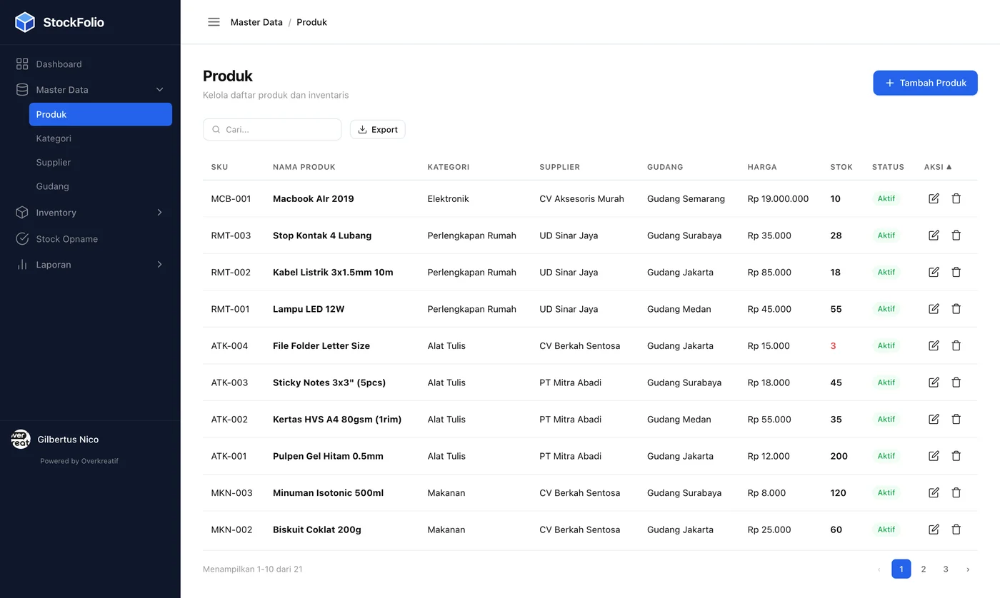
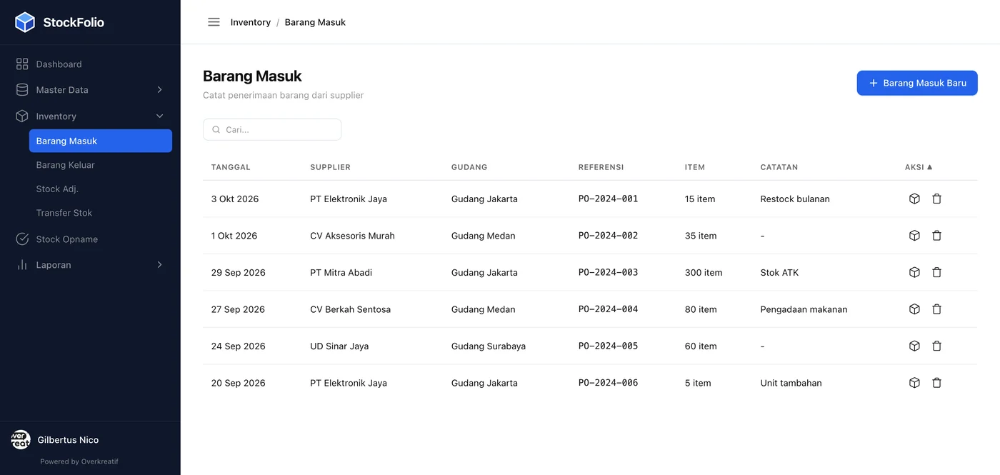
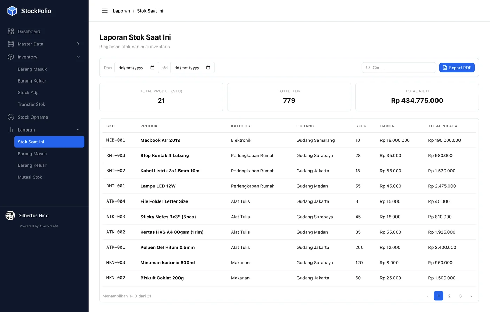

Inventaris lebih tertata,
bisnis lebih terkendali.
Kelola produk, stok, gudang, keluar-masuk barang, stok opname, sampai laporan, semuanya dari satu tempat.
Gampang dipakai · Datanya jelas · Hemat waktu

Masih mengandalkan spreadsheet?
Produk, gudang, dan transaksi terus bertambah, tapi kamu makin susah tahu kondisi stok yang sebenarnya.
Stok sulit dipantau
Datanya tersebar di banyak file, jadi cek stok saja butuh waktu lama.
Keluar-masuk barang tidak tercatat rapi
Barang masuk, keluar, penyesuaian, dan transfer sering tidak punya riwayat yang jelas.
Keputusan jadi lambat
Padahal data stok seharusnya langsung kasih tahu kamu apa yang perlu ditangani duluan.
Seluruh inventaris. Satu sistem.
StockFolio menggabungkan semua urusan stok dalam satu alur kerja yang sederhana dan gampang dipahami.
Data Utama
01Simpan data produk, kategori, pemasok, dan gudang di satu tempat yang rapi.
Pergerakan Stok
02Catat barang masuk, barang keluar, penyesuaian, dan transfer stok.
Stok Opname
03Bandingkan stok di sistem dengan jumlah fisik dan lihat selisihnya.
Dasbor
04Lihat jumlah produk, pemasok, gudang, stok, aktivitas, dan barang dengan stok menipis.
Laporan
05Tinjau kondisi stok serta riwayat barang masuk, barang keluar, dan transfer.
Ekspor
06Gunakan pencarian, filter tanggal, dan ekspor untuk kebutuhan pelaporan.
Begini tampilannya.
Dibuat untuk dipakai setiap hari: info penting gampang ditemukan, tabel enak dibaca, dan semua aktivitas stok tercatat rapi.
Dasbor
Ringkasan inventaris, pergerakan barang, peringatan stok menipis, distribusi gudang, dan aktivitas terbaru dalam satu layar.
Produk
Kelola SKU, kategori, pemasok, gudang, harga, stok, dan status dalam tabel yang mudah dibaca.

Barang Masuk
Catat barang masuk berdasarkan pemasok, gudang, referensi, dan item.

Laporan Stok
Lihat jumlah SKU dan barang, nilai total inventaris, serta rincian stok berdasarkan produk dan gudang.

Tampilan ini paling nyaman dibuka di laptop atau desktop.
Mulai pakai dalam tiga langkah.
Siapkan datamu
Masukkan produk, kategori, pemasok, dan gudang. Cukup sekali di awal.
Catat pergerakan barang
Setiap barang masuk, keluar, penyesuaian, dan transfer otomatis tercatat.
Pantau dan evaluasi
Cek dasbor, stok opname, dan laporan untuk tahu kondisi stok dan apa yang perlu dilakukan.
Cocok untuk bisnis yang stoknya mulai ribet diurus.
Ritel
Kelola banyak SKU dan pantau stok tanpa pusing.
Distributor
Atur barang masuk, keluar, dan pindah antar gudang dengan rapi.
Pergudangan
Cocokkan stok fisik dengan stok di sistem kapan saja.
Bisnis Berkembang
Mulai rapikan stok secara digital tanpa harus langsung pakai sistem ERP yang rumit.
Dari berantakan jadi rapi.
Data tersebar.
- —Spreadsheet terpisah-pisah
- —Pengecekan manual
- —Riwayat sulit ditelusuri
- —Stok menipis baru diketahui terlambat
Satu sistem.
- +Data utama terpusat
- +Pergerakan tercatat
- +Stok opname lebih jelas
- +Dasbor dan laporan siap digunakan
Saatnya beralih dari spreadsheet.
Yuk, rapikan stok bisnis kamu dengan sistem yang sederhana dan sesuai cara kerja tim kamu.
Request Demo